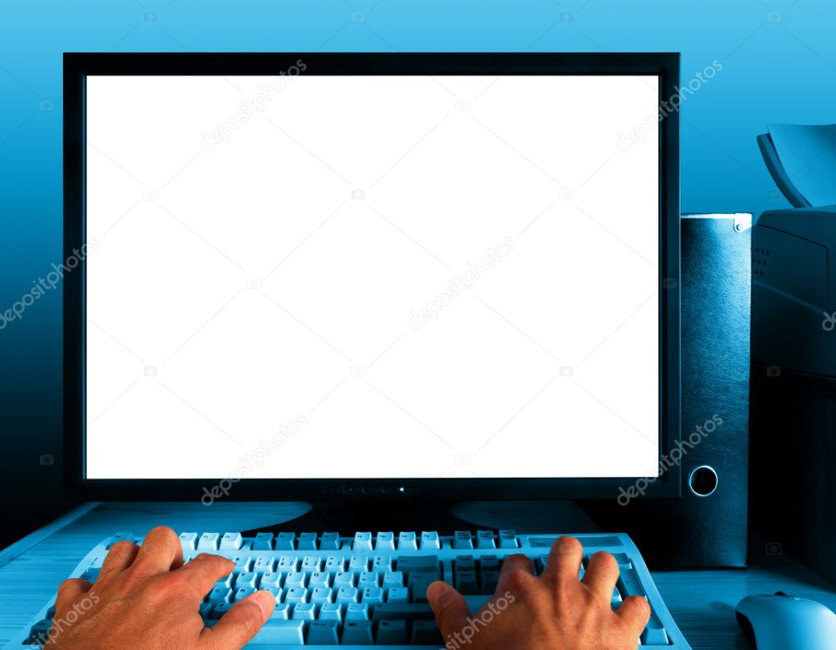

Un ordinateur est composé d'un écran, une unité centrale, un clavier et d'une souris. À cette composition de base, il est possible d’ajouter d’autres d’appareils électroniques ayant divers usages et fonctionnalités. C’est ce que l’on appelle un périphérique. Il existe des périphériques d’entrées qui permettent d’envoyer des données à l’unité centrale (clavier, souris, micro, scanner…), des périphériques de sorties qui permettent de recevoir les données par l’unité centrale (hauts parleurs, imprimante…) et des périphériques qui font les deux (webcam avec micro intégré, imprimante scanner…).
La souris permet de piloter l’ordinateur. Elle doit être utilisée sur une surface plane d’où l’importance d’avoir un tapis de souris. Il en existe avec ou sans fil, droitier ambidextre ou gaucher. Les plus simples sont constituées du bouton gauche, droit et de la molette. Le clic gauche permet de sélectionner l’élément pointé par le curseur de la souris. Le double clic gauche (2 appuis bref) permet de lancer une application. Le clic droit permet d’afficher le menu contextuel (couper, copier, coller, propriété…) La molette permet de faire défiler du texte. Le clic de la molette permet d’ouvrir une nouvelle fenêtre de navigation.
Pour ce faire il va falloir, sans ordre précis, allumer l’écran et l’unité centrale. Généralement, un voyant lumineux vert sur le boitier confirmera l’allumage. Lorsque l’unité centrale est allumée, votre ordinateur démarre. Après quelques secondes le système d’exploitation se charge. Pour faire simple, le système d’exploitation est ce qui fait marcher votre machine et affiche tout ce qu’il se passe à l’écran. Le chargement peut prendre jusqu’à plusieurs minutes selon la puissance de l’ordinateur.
À la fin du chargement, plusieurs cas de figure peuvent se présenter à nous :
Vous êtes maintenant arrivé sur votre système Windows. La première chose que l’on voit est le bureau avec un fond d’écran. Nous allons donc repérer le bouton en bas à gauche de l’écran « Démarrer », puis sur le bouton « Marche/Arrêt » et enfin sur « Arrêter ». Vous pouvez dès à présent éteindre l’écran et l’unité centrale s’éteindra d’elle-même.
Il existe beaucoup de navigateur, ils se ressemblent beaucoup et proposent en règle générale les mêmes fonctionnalités. Microsoft Edge est le moteur de recherche intégré de base sur les ordinateurs sous Windows. Google Chrome : Le plus utilisé et le mieux optimiser. Firefox : Propose les mêmes fonctionnalités que Google Chrome. DuckDuckGo : Sans publicité, respecte la vie privée. Ecosia : S’engage auprès de la cause environnementale.
Un logiciel malveillant ou malware est un programme développé dans le but de nuire à un système informatique sans le consentement de l’utilisateur dont l’ordinateur est infecté. Il existe plusieurs types de malware : virus, vers, chevaux de troie… La meilleure chose à faire si l’ordinateur est infecté c’est de l’éteindre et l’amener chez un professionnel.
Il est essentiel d’adopter une bonne position face à son poste de travail pour éviter tendinites, fatigue…
Ces quelques conseils permettront d’apprécier entièrement l’utilisation d’un ordinateur et sont valables peu importe le temps que vous passerez dessus.